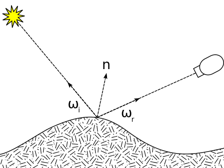

[图形]渲染方程
BRDF

The bidirectional reflectance distribution function (BRDF; $f_r(\omega_i,\omega_r)$) is a function of four real variables that defines how light is reflected at an opaque surface. It is employed in the optics of real-world light, in computer graphics algorithms, and in computer vision algorithms. The function takes an incoming light direction, $\omega_i$, and outgoing direction, $\omega_r$ (taken in a coordinate system where the surface normal $\mathbf{n}$ lies along the z-axis), and returns the ratio of reflected radiance exiting along $\omega_r$ to the irradiance incident on the surface from direction $\omega_i$. Each direction $\omega$ is itself parameterized by azimuth angle $\phi$ and zenith angle $\theta$ , therefore the BRDF as a whole is a function of 4 variables. The BRDF has units sr−1, with steradians (sr) being a unit of solid angle.
表示光与物体表面进行交互然后反射出去，是物体对光的一个作用
定义光如何在不透明表面反射的函数，它有四个参数
想象一下，有一束光线打到镜子上，它会反射到某个方向上去。如果光打到漫反射物体，会被反射到四面八方。我们想要一个函数来描述反射这一性质。
我们可以描述成，光从某个方向进来，并且反射到某个方向上去，这部分反射的能量应该是多少（不同的反射方向上会分布多少能量）

从$\omega_i$来的Radiance打到$\mathrm{d}A$上（现在面积就是单位面积了）,这部分面积会吸收能量。再把吸收的能量发射出去。
相当于入射的Radiance会在表面转化成Power，然后Power又会辐射到另一个方向上
那么那一块单位面积从某一个方向上的立体角接收到的Irradiance有
$$ \mathrm{d}E(\omega_i)=L(\omega_i)cos\theta_i\mathrm{d}\omega_i $$
这些接收到的能量会被分配到各个不同的立体角上发射出去，但是在某个方向（某个立体角）上会辐射多少能量？
立体角上辐射多少能量和总能量有比例关系，对于任何一个出射方向都算出radiance，然后除以面积上的irradiance，这就是BRDF的定义

$$ f_r(\omega_i\to\omega_r)=\frac{\mathrm{d}L_r(\omega_r)}{\mathrm{d}E_i(\omega_i)}=\frac{\mathrm{d}L_r(\omega_r)}{L_i(\omega_i)cos\theta_i\mathrm{d}\omega_i} $$
单位：$\frac{1}{sr}$
Reflection Equation
既然BRDF描述了一个点（微小面积）在任何方向上的反射结果。现在我们盯着某一个反射方向，并且我们知道物体表面可以接收四面八方的光照，那对于每一个入射方向的radiance，乘以$cos\theta_i\mathrm{d}\omega_i$（这里乘上这个之后就变成了irradiance）再乘以BRDF（变成出射的radiance），再把结果加起来，就得到了，这个点在所有可能的入射方向上，最后反射到某个方向上的radiance

任何光照的进入方向对观测点出射方向的贡献的叠加
$$ L_r(p,\omega_r)=\int_{H^2} f_r(p,\omega_i\to\omega_r)L_i(p,\omega_i)cos\theta_i\mathrm{d}\omega_i $$
从某个方向看某个着色点其实是个积分，积分考虑任何方向的$\omega_i$的radiance到着色点，经过BRDF变成出射的radiance
根据反射方程定义，可以推断，除了光源对着色点有贡献，其他物体反射的光其实对着色点也有贡献，也就是说，入射的radiance不一定是光源的，也可能是其他物体反射出来的radiance 公交车。很像递归，毕竟光线在场景中不止弹射一次（如果限制只弹一次，那就只有光源的radiance）。
Rendering Equation
万一物体自己还会发光，再把这部分光叠加到反射方程上
$$ L_o(p,\omega_o)=L_e(p,\omega_o)+\int_{\Omega^+} f_r(p,\omega_i\to\omega_o)L_i(p,\omega_i)(n\cdot\omega_i)\mathrm{d}\omega_i $$
$cos\theta_i$改写为法线n点乘入射方向
其中：
$L_o$：单位时间内$p$点向$\omega_o$方向贡献的光的radiance
$L_e$：单位时间内$p$点发的光向$\omega_o$方向贡献的radiance
$f_r(p,\omega_i\to\omega_o)$：BRDF，表示在$p$点，$\omega_i$方向来的光与物体表面进行交互，反射到$\omega_o$方向的光的radiance
$L_i$：表示单位时间内$p$点接受的$\omega_i$方向的radiance
$n\cdot\omega_i$：表示光来的方向由于角度带来的衰减
$\Omega^+$：表示半球面，是反射发生的那个半球面
现在无论是其他物体反射的光，还是发光体发出的光，都当作发光体，公式不需要任何修正
显然，$L_o$和$L_i$未知，其他是已知的
现在对方程简写
$$ l(u)=e(u)+\int l(v) K(u,v)\mathrm{d}v $$
$l$是辐射出去的radiance
$u$是射入，$v$是射出
$e(u)$是自己发光
$K(u,v)$是BRDF
进一步的，将方程简化为算子
$$L=E+KL$$
辐射出来的所有能量 等于 自己发光 加上 其他辐射到物体上并被反射的能量
这个算子可以被离散成矩阵方程，$L$和$E$是向量，$K$是矩阵
$$
\begin{split}
L&=E+KL \newline
IL-KL&=E \newline
(I-K)L&=E \newline
L&=(I-K)^{-1}E \newline
L&=(I+K+K^2+K^3+…)E \newline
L&=E+KE+K^2E+K^3E+… \newline
\end{split}
$$
结论中，$E$是光源，$KE$是直接光照，反射一次，$K^2E$是间接光照，反射两次，依此类推
将所有不同光线弹射次数的结果加起来，就是全局光照（Global Illumination）
光栅化一般只做$L=E+KE$
总结
渲染方程是一个积分方程，而且是高维积分，可以一直展开（递归）
因为可以递归，所以可能出现跳不出递归的情况（两面镜子对着看，无限反弹233）
渲染方程无法用牛顿莱布尼兹公式来计算积分，因为我们不知道BRDF的解析式，也就不知道被积函数的解析式
参考
Bidirectional reflectance distribution function - Wikipedia
GAMES101-现代计算机图形学入门-闫令琪
从零开始学图形学：写一个光线追踪渲染器（一）——渲染方程与BxDF
渲染方程Rendering equation

除非特殊说明，否则一律采用知识共享署名-相同方式共享 4.0 国际许可协议进行许可。